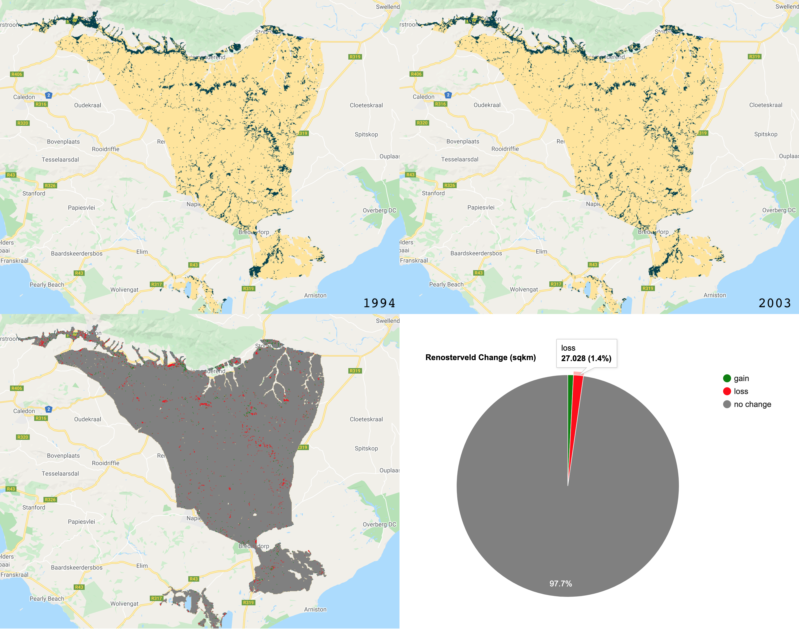
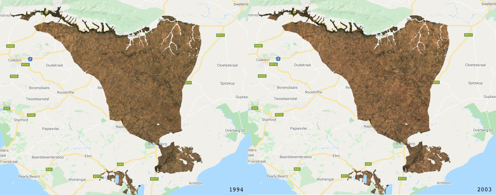
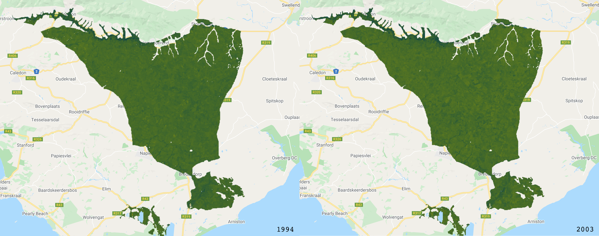
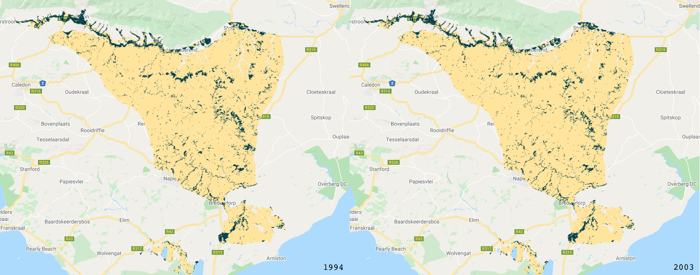
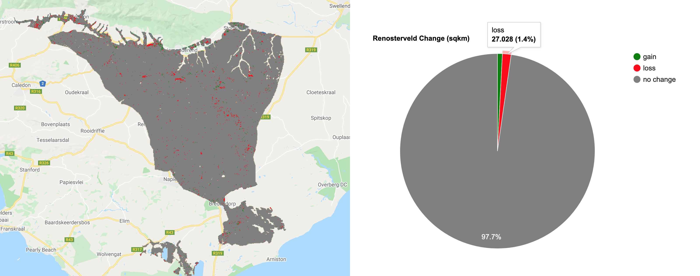
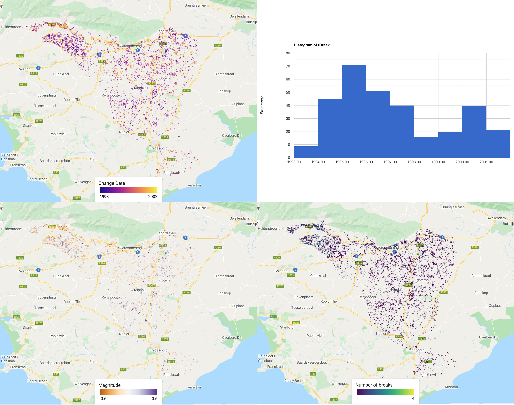
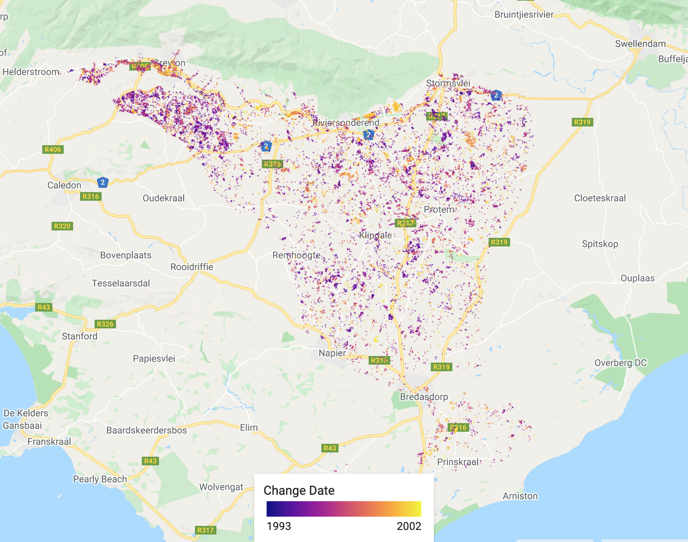
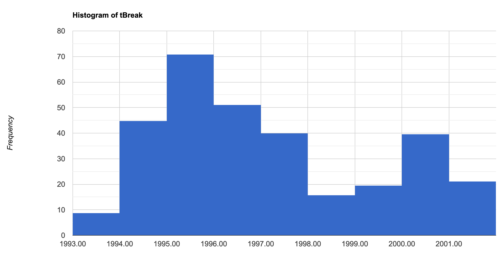
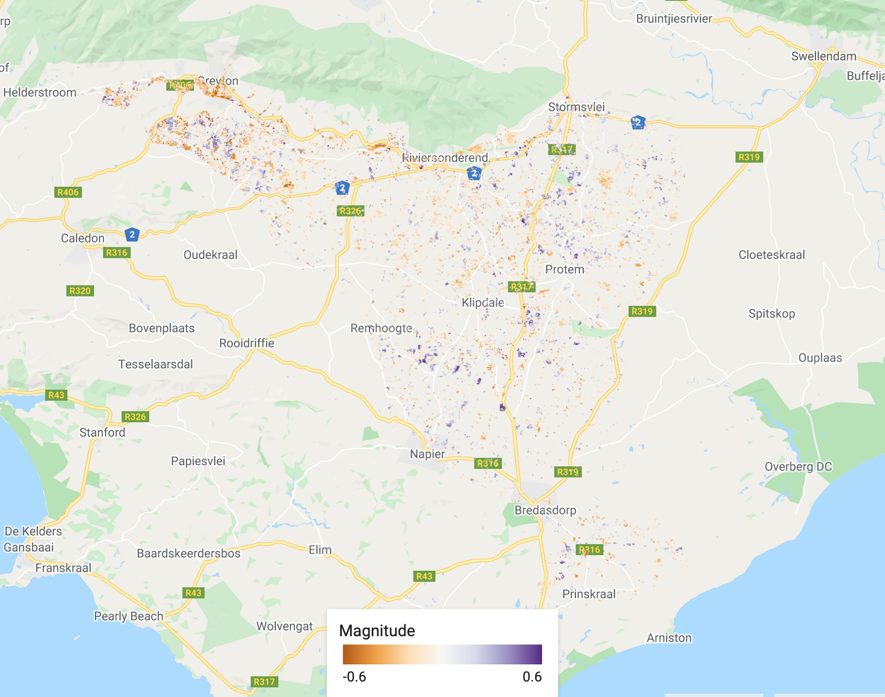
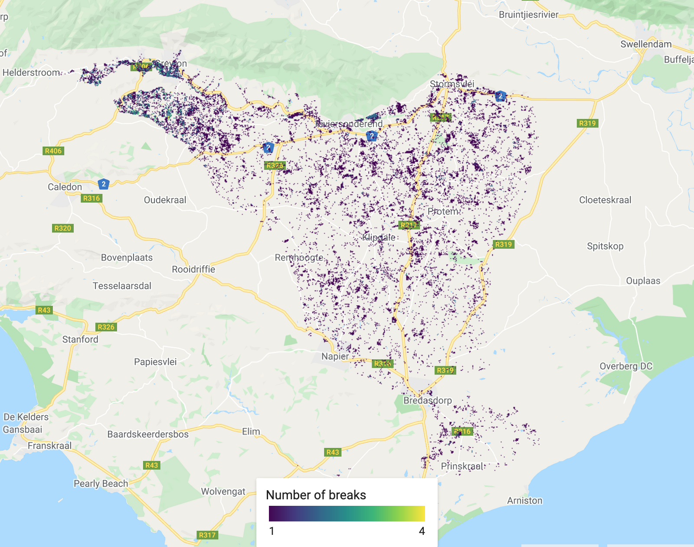

GOOGLE EARTH ENGINE FOR ECOLOGY AND CONSERVATION
Practical 8: Continuous change detection & classification
by Joseph White
Learning Objectives
By the end of this practical you should be able to:
- Understand the value of continuity in change detection
- Understand and implement continuous change detection
- Classify a region using bands and regression variables
- Obtain ‘regular’ image and change information
Access the slides here: bit.ly/2R8U5wO
Introduction
For many land cover change analyses, particularly in forest detection, we have previously relied on annual (or longer interval) land classifications. This includes datasets such as Hansen Global Forest Change or Global Forest Cover Change. These data are immensely valuable and do a good job at compensating for difficulties in monitoring forests in regions with lots of clouds. However, there are limitations to understanding land cover change, when we only have a few observation epochs. This is where Continuous Change Detection and Classification comes in. Using all available satellite observations, the CCDC algorithm provides a more comprehensive approach to classifying images and detecting change. This practical gives an overview of this.
Some useful resources to better understand the CCDC approach and implementation in GEE can be found below:
- Souza Jr. et al 2005
- Zhu & Woodcock 2014
- Arévalo et al. 2020
- Documentation for CCDC in GEE
- CCDC in GEE Apps
The analysis is broken into two parts. Part 1 addresses applying a classification to any time point in your ImageCollection. Part 2 addresses exporting variables for further analysis. Part 1 relies on two external libraries and shows aspects of the required workflow. I recommend trying the full workflow that relies on the excellent CCDC utilities package alone when running CCDC with your own (Documentation for CCDC in GEE).
Part 1: Access the completed practical script here.
The end product for Part 1:
Set up your workspace. Start by creating your study region polygon.
///////////////////////////////// ///// Select your study region // ///////////////////////////////// // Create a polygon/import a featureCollection ///////////////////////////////// ///// Set map options /////////// ///////////////////////////////// Map.centerObject(studyRegion, 9); ///////////////////////////////// ///// Load extra libraries ////// ///////////////////////////////// // The utilities package for ccdc is the best developed of the ccdc api's var utils = require('users/parevalo_bu/gee-ccdc-tools:ccdcUtilities/api') // the temporal segmentation package does a good job doing some basic ccdc functions var temporalSegmentation = require('users/wiell/temporalSegmentation:temporalSegmentation'); // the palettes package for map outputs var palettes = require('users/gena/packages:palettes');
Next set up the required parameters for the CCDC analysis and load in the Landsat collection. Plot out the least cloudy image from the Landsat collection, which you can use to create your training data with the point tool.
///////////////////////////////// ///// Set up parameters ///////// ///////////////////////////////// // Parameters for change detection algorithm var changeDetection = { breakpointBands: ['GREEN','RED','NIR','SWIR1','SWIR2','NDFI'], // bands to use for regression tmaskBands: ['GREEN','SWIR2'], lambda: 20/10000, // tuning parameter // minObservations: 6, // observation window // chiSquareProbability: .99, // threshold for change detection // minNumOfYearsScaler: 1.33, // min number of years to apply new fitting // dateFormat: 2, // maxIterations: 25000 // number of runs for LASSO regression convergence } // Overall parameters var params = { start: '2000-01-01', end: '2020-01-01', ChangeDetection: changeDetection, StudyRegion: studyRegion } /////////////////////////////////////////// ///// Import & Pre-Process Landsat Data /// /////////////////////////////////////////// // Filter by date and a location in Brazil var filteredLandsat = utils.Inputs.getLandsat() // using the utility package loaded earlier .filterBounds(params.StudyRegion) .map(function(image) {return image.clip(studyRegion)}) .filterDate(params.start, params.end) print('collection size:',filteredLandsat.size()) // Investigate landsat data // Add the image with the least cloud to the map Map.addLayer(filteredLandsat.sort('CLOUD_COVER').first(), {bands: ['RED', 'GREEN', 'BLUE'],min: 0,max: 0.3, gamma: 1.2}, 'Least cloudy image', false); // Save the date of the image, which we use for creating a training data set var img_date = ee.Date(filteredLandsat.sort('CLOUD_COVER').first().get('system:time_start')).format("yyyy-MM-dd").aside(print, 'Date cloud free image'); // At this point you can create your training data // Use the point tool to create classes of data based on the cloudless image // Add our landsat dataset to the params dictionary params.ChangeDetection['collection'] = filteredLandsat print('Parameters:', params);
Now that we have defined our parameters, loaded in and pre-processed the landsat imagery, the CCDC alogrithm can be easily run. Using the temporalSegmentation package, you can chart out the CCDC segments for a specified point (i.e. pixel) and observe the break points detected.
/////////////////////////////////////////// ///// Run CCDC Algorithm ////////////////// /////////////////////////////////////////// var results = ee.Algorithms.TemporalSegmentation.Ccdc(params.ChangeDetection) print('CCDC results:',results); // Add the harmonic regression segments to the chart // Drop a point within your study region to display the chart temporalSegmentation.chartPoint({ image: results, point: geometry, bandName: 'NDFI', collection: filteredLandsat, callback: function (chart) { print(chart) } })
In this chart, the CCDC algorithm suggests there was a change in land cover around early 2005. The y-axis shows changes in NDFI.
At this point, it is a good idea to save the CCDC output to your asset. This will help further down the line, by saving memory and will make your code run a lot more smoothly. Once export, you can comment out this code and load the image back in from your assets.
/////////////////////////////////////////////////////// /// Only run this bit once & save results to ASSETS /// /////////////////////////////////////////////////////// // var segments = temporalSegmentation.Segments(results) // Create temporal segments // This is the image you will use for the rest of Part 1 // // Export as asset. Include same options as for regular exports. // // Skip the image and pyramidingPolicy though, which gets defaulted. // segments.toAsset({ // description: 'ccdc_segments', // region: studyRegion, // scale: 30, // crs: 'EPSG:4326' // }) // This is the image you will use for Part 2 // Export.image.toAsset({ // image: results, // scale: 30, // description: 'ccdc_L_raw', // maxPixels: 1e13, // region: studyRegion, // pyramidingPolicy: { // '.default': 'sample' // } // }) // Load the CCDC results back in var segmentsImage = ee.Image('users/jdmwhite/ccdc_segments') // Load CCDC asset var segments = temporalSegmentation.Segments(segmentsImage) // Create temporal segments
Once the CCDC image is loaded back in, we can now prepare the training and testing points for classification. The training points require a land cover type label and a date, which corresponds to the image the data was collected from.
/////////////////////////////////////////////////////// /// Prepare data for classification /////////////////// /////////////////////////////////////////////////////// // Prepare the training point data // Convert the ee.Geometry.Multipoint to FeatureCollections and set type & date values // Forest var forest = ee.FeatureCollection(forest.coordinates().map(function(p) { var type = ee.Feature(ee.Geometry.Point(p), {type: 1}) // 1 for forest var date_type = type.set('date', img_date) return date_type})) // Other var other = ee.FeatureCollection(other.coordinates().map(function(p) { var type = ee.Feature(ee.Geometry.Point(p), {type: 0}) // 0 for other var date_type = type.set('date', img_date) return date_type})) //Stratified random sampling for each class // First for forest var forest_table = forest.randomColumn({seed: 16}); var forest_training = forest_table.filter(ee.Filter.lt('random', 0.80)); var forest_test = forest_table.filter(ee.Filter.gte('random', 0.80)); // Next for other var other_table = other.randomColumn({seed: 16}); var other_training = other_table.filter(ee.Filter.lt('random', 0.80)); var other_test = other_table.filter(ee.Filter.gte('random', 0.80)); //Combine our forest & other reference points for our training & test data var trainingPoints = forest_training.merge(other_training); var testingPoints = forest_test.merge(other_test).aside(print, 'test data'); // Function to remove the random column, as it isn't needed for later var removeProperty = function(feat, property) { var properties = feat.propertyNames() var selectProperties = properties.filter(ee.Filter.neq('item', property)) return feat.select(selectProperties) } // remove the random property in each feature var trainingPoints = trainingPoints.map(function(feat) { return removeProperty(feat, 'random') }) print(trainingPoints, 'training points') var testingPoints = testingPoints.map(function(feat) { return removeProperty(feat, 'random') })
We now want to sampe the pixels for each point in the training and testing data. First use the mapSegment function to extract information for each temporal segment. Then select the images (by date) that you wish to classify. Lastly, sample the data for both training and testing datasets.
// Function to extract an image from a segment. Used when sampling and classifying. // Provide whatever information you think helps the classification in this image var mapSegment = function(segment) { var image = segment.toImage() var rmse = image.select('.*_rmse') var ndfiCoefs = segment.coefs('NDFI') var fit = segment.fit() return ee.Image([rmse, ndfiCoefs, fit]) } // Create regression for two dates to provide quick feedback on classification results var Segment_2005 = segments.findByDate('2001-01-01', 'closest') // selects image closest to this date var Image_2005 = mapSegment(Segment_2005) var Segment_2015 = segments.findByDate('2015-01-01', 'closest') // selects image closest to this date var Image_2015 = mapSegment(Segment_2015) print('test image:', Image_2015); // create the training data by overlaying the ref data on the segments var trainingData = segments.sample(trainingPoints, mapSegment, 30) // select scale print('trainingData', trainingData) // create the training data by overlaying the ref data on the segments var testingData = segments.sample(testingPoints, mapSegment, 30) // select scale // print('testingData', trainingData)
Now we can train our classifier using a Random Forest. Once the classifier is trained, classify both extracted images. Next you can run the model evaluation.
/////////////////////////////////////////////////////// /// Classify a single image /////////////////////////// /////////////////////////////////////////////////////// var classifier = ee.Classifier.smileRandomForest(50) .train({ features: trainingData, classProperty: 'type' }); var testClassification_2005 = Image_2005 .classify(classifier.setOutputMode('CLASSIFICATION')) print(testClassification_2005, 'testClassification 2005'); var testClassification_2015 = Image_2015 .classify(classifier.setOutputMode('CLASSIFICATION')) // print(testClassification_2015, 'testClassification 2015'); /////////////////////////////////////////////////////// /// Model Evaluation ////////////////////////////////// /////////////////////////////////////////////////////// //Test accuracy var Test = testingData.classify(classifier); print('ConfusionMatrix', Test.errorMatrix('type', 'classification')); print('TestAccuracy', Test.errorMatrix('type', 'classification').accuracy()); print('Kappa Coefficient', Test.errorMatrix('type', 'classification').kappa()); print('Producers Accuracy', Test.errorMatrix('type', 'classification').producersAccuracy()); print('Users Accuracy', Test.errorMatrix('type', 'classification').consumersAccuracy());
The final step in Part 1, is to visualise the images and calculate a simple binary change from the two images (2015 minus 2005). We will add layers for RGB and NDFI and then add the classified layers.

/////////////////////////////////////////////////////// /// Visualisation ///////////////////////////////////// /////////////////////////////////////////////////////// // Creat a palette for the NDFI layer var palette = palettes.crameri.bamako[10].reverse(); // Add the layers to the map // RGB images Map.addLayer(Image_2005, {bands: ['RED', 'GREEN', 'BLUE'], min:0, max:0.3, gamma:1.3}, 'test image 2005 RGB', false) Map.addLayer(Image_2015, {bands: ['RED', 'GREEN', 'BLUE'], min:0, max:0.3, gamma:1.3}, 'test image 2015 RGB', false) // NDFI layers Map.addLayer(Image_2005, {bands: 'NDFI', min: -1, max: 1, palette: palette}, 'test image 2005 NDFI', false) Map.addLayer(Image_2015, {bands: 'NDFI', min: -1, max: 1, palette: palette}, 'test image 2015 NDFI', false) // Classifications Map.addLayer(testClassification_2005, {min: 0, max: 1, palette: ['FFE599','00404D']}, 'test classification 2005', false) Map.addLayer(testClassification_2015, {min: 0, max: 1, palette: ['FFE599','00404D']}, 'test classification 2015', false) ///////////////////////////// // Simple Binary Change ///// ///////////////////////////// // Subtract the 2015 classification from the 2005 classification var coverChange = testClassification_2015.subtract(testClassification_2005); // Add the layer to the map. Red = loss; Grey = no change; Green = gain Map.addLayer(coverChange,{palette: ['red','grey','green'], min: -1, max: 1},'Forest Cover Change 2005-2015',false); // Let's create a chart of the area of each class var labels =[ 'gain','no change','loss' ]; var areaClass = coverChange.eq([1, 0, -1]).rename(labels); // Calculate the area for each pixel var areaEstimate = areaClass.multiply(ee.Image.pixelArea()).divide(1e6); // Set up the chart var chart = ui.Chart.image.regions({ image: areaEstimate, regions: studyRegion, reducer: ee.Reducer.sum(), scale: 1000, }).setChartType('PieChart').setOptions({ width: 250, height: 350, title: 'Area by class (sqkm)', // is3D: true, colors: ['green','red','grey'], }); print(chart); //////////////////////////// ////// legend for classes // //////////////////////////// // See: https://mygeoblog.com/2016/12/09/add-a-legend-to-to-your-gee-map/ // set position of panel var legend = ui.Panel({ style: { position: 'bottom-left', padding: '8px 15px' } }); // Create legend title var legendTitle = ui.Label({ value: 'Land Cover Classes', style: { fontWeight: 'bold', fontSize: '18px', margin: '0 0 4px 0', padding: '0' } }); // Add the title to the panel legend.add(legendTitle); // Creates and styles 1 row of the legend. var makeRow = function(color, name) { // Create the label that is actually the colored box. var colorBox = ui.Label({ style: { backgroundColor: '#' + color, // Use padding to give the box height and width. padding: '8px', margin: '0 0 4px 0' } }); // Create the label filled with the description text. var description = ui.Label({ value: name, style: {margin: '0 0 4px 6px'} }); // return the panel return ui.Panel({ widgets: [colorBox, description], layout: ui.Panel.Layout.Flow('horizontal') }); }; // Palette with the colors var palette =['00404D','FFE599']; // name of the legend var names = ['Forest','Other']; // Add color and names for (var i = 0; i < 2; i++) { legend.add(makeRow(palette[i], names[i])); } // add legend to map Map.add(legend);
The RGB images.
The NDFI images (darker pixels have a higher NDFI value).
The classified images.
The binary change image, showing losses, gains and no change in forest cover.
Note: this is a very basic approach to area estimation and recent literature suggests that biases due to classification errors may limit this approach. For more information on alternative approaches, read the Arévalo et al. 2020 paper and see https://area2.readthedocs.io/en/latest/overview.html
Part 2: Access the completed practical script here.
The end product for Part 2:
For Part 2, start in a similar way by setting up your map options and loading the additional libraries. This time we will only use the CCDC utilities package.
///////////////////////////////// ///// Set map options /////////// ///////////////////////////////// Map.centerObject(studyRegion, 9); ///////////////////////////////// ///// Load extra libraries ////// ///////////////////////////////// // The utilities package for ccdc is the best developed of the ccdc api's var utils = require('users/parevalo_bu/gee-ccdc-tools:ccdcUtilities/api') // the palettes package for map outputs var palettes = require('users/gena/packages:palettes');
Now import your CCDC image ('results') from Part 1 that were exported to your assets. There is a problem now... the CCDC image is stored as an array. This is done because before starting, we do not know the length of each variable calculated by the CCDC algorithm. Some have many segments, some hav few. This means we need to convert it to a 'regular' or 'synthetic' EE image. First create a list of the bands you are interested in, followed by the max. number of segments you are expecting. Lastly, run the buildCcdImage function, which will perform the conversion for you.
/////////////////////////////////////////// ///// Import Data ///////////////////////// /////////////////////////////////////////// // Load the CCDC results back in var results = ee.Image("users/jdmwhite/ccdc_Rondonia_example") /////////////////////////////////////////// ///// Process ///////////////////////////// /////////////////////////////////////////// // Spectral band names. This list of all the bands we are interested in var BANDS = ['BLUE', 'GREEN', 'RED', 'NIR', 'SWIR1', 'SWIR2'] // Names of the temporal segments and the number. There are not likely to be more than // 10 segments for each pixel var SEGS = ["S1", "S2", "S3", "S4", "S5", "S6", "S7", "S8", "S9", "S10"] // Obtain CCDC results in 'regular' ee.Image format var ccdImage = utils.CCDC.buildCcdImage(results, SEGS.length, BANDS) print('ccdImage:',ccdImage);
We now run the filterMag function, which extracts three bands from the 'synthetic' image. This includes the time of the biggest break (tBreak), the total number of breaks (numTbreak) and the magnitude of the biggest break (MAG). Select a band to use (as different bands may produce different segmentation) and the number of segments to extract and ensure that your dates are correctly formatted.
// Convert the date to a format required var changeStart = '1999-01-01' var changeEnd = '2020-01-01' var startParams = {inputFormat: 3, inputDate: changeStart, outputFormat: 1} var endParams = {inputFormat: 3, inputDate: changeEnd, outputFormat: 1} var formattedStart = utils.Dates.convertDate(startParams).aside(print) var formattedEnd = utils.Dates.convertDate(endParams).aside(print) // Run the filterMag function from the utils package // This extracts information on the time of the biggest break (tBreak) // the magnitude of the biggest break (MAG) and the total number of breaks (numTbreak) var filteredChanges = utils.CCDC.filterMag(ccdImage, formattedStart, formattedEnd, 'SWIR1', SEGS) print('filterChanges:',filteredChanges);
Now visualise the different images and run a quick histogram to see the distribution of the major change dates.

/////////////////////////////////////////// ///// Visualisation /////////////////////// /////////////////////////////////////////// // A chosen palette var change_date_palette = palettes.matplotlib.plasma[7]; var mag_palette = palettes.colorbrewer.PuOr[7]; var num_breaks_palette = palettes.matplotlib.viridis[7]; // The time of break Map.addLayer(filteredChanges.select('tBreak'), {min: 1999, max: 2020, palette: change_date_palette}, 'Change date'); // The magnitude of break Map.addLayer(filteredChanges.select('MAG'), {min: -0.2, max: 0.2, palette: mag_palette}, 'Magnitude'); // The number of breaks Map.addLayer(filteredChanges.select('numTbreak'), {min: 1, max: 9, palette: num_breaks_palette}, 'Number of breaks'); // Histogram of Change date // Make sure you have your original study region defined var hist = ui.Chart.image.histogram({ image:filteredChanges.select('tBreak'), region:studyRegion, minBucketWidth: 1, scale: 1000, }) print(hist); // Add in legend for aid in visualisation ///////// tBreak // Styling for the legend title. var LEGEND_TITLE_STYLE = { fontSize: '16px', // fontWeight: 'bold', stretch: 'horizontal', textAlign: 'left', margin: '4px', }; function ColorBar(palette) { return ui.Thumbnail({ image: ee.Image.pixelLonLat().select(0), params: { bbox: [0, 0, 1, 0.1], dimensions: '100x10', format: 'png', min: 0, // change min value max: 1, // change max value palette: change_date_palette, // chose the correct palette }, style: {stretch: 'horizontal', margin: '0px 8px'}, }); } // Returns our labeled legend, with a color bar and three labels representing // the minimum, middle, and maximum values. function makeLegend() { var labelPanel = ui.Panel( [ui.Label('1999', {margin: '4px 8px'}), // change min label here ui.Label('',{margin: '4px 8px', textAlign: 'center', stretch: 'horizontal'}), ui.Label('2020', {margin: '4px 8px'})], // change max label here ui.Panel.Layout.flow('horizontal')); return ui.Panel([ColorBar(change_date_palette.palette), labelPanel]); } // Assemble the legend panel. Map.add(ui.Panel( [ ui.Label('Change Date', LEGEND_TITLE_STYLE), makeLegend() // change title here ], ui.Panel.Layout.flow('vertical'), {width: '230px', position: 'bottom-left'})); // change location here to chose where to put legend
The date of the biggest change.
Histogram showing the distribution of the date of biggest change.
The magnitude of the biggest change. Purple shows a decrease in the chosen band (SWIR1 in this case) and orange shows an increase.
The total number of changes (segments) recorded. Dark colours show less changes.
There is no assignment for this practical To complete the practical exercise below you need to know how to share your scripts.